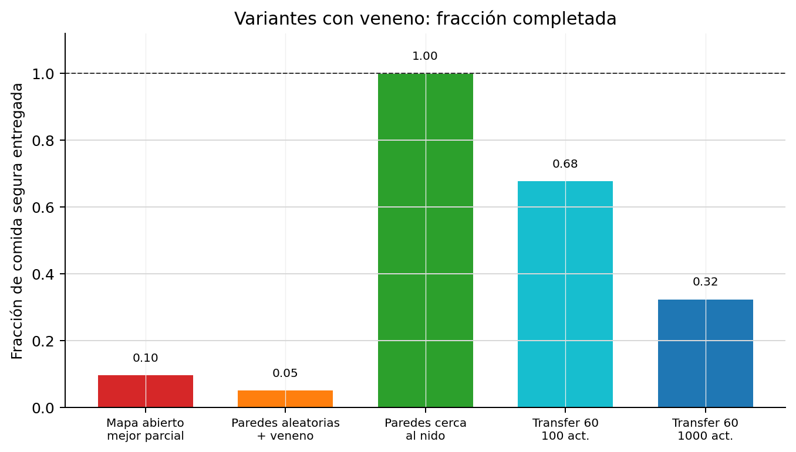
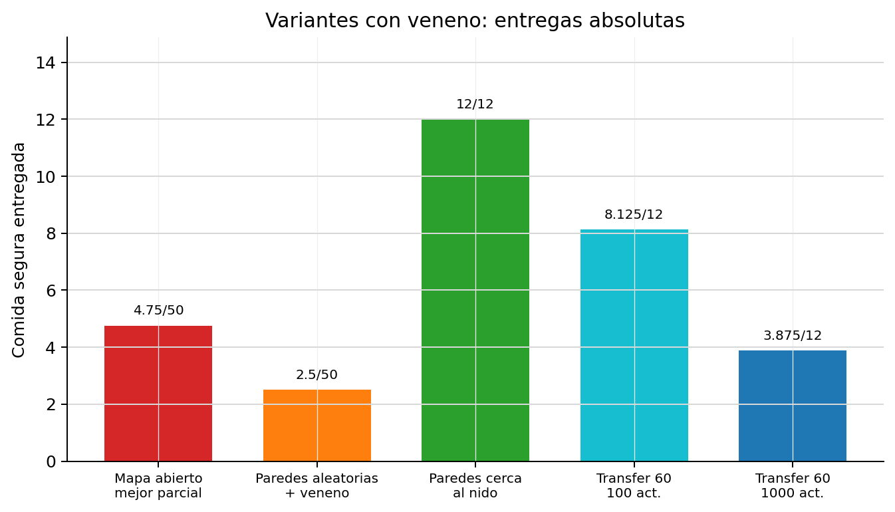
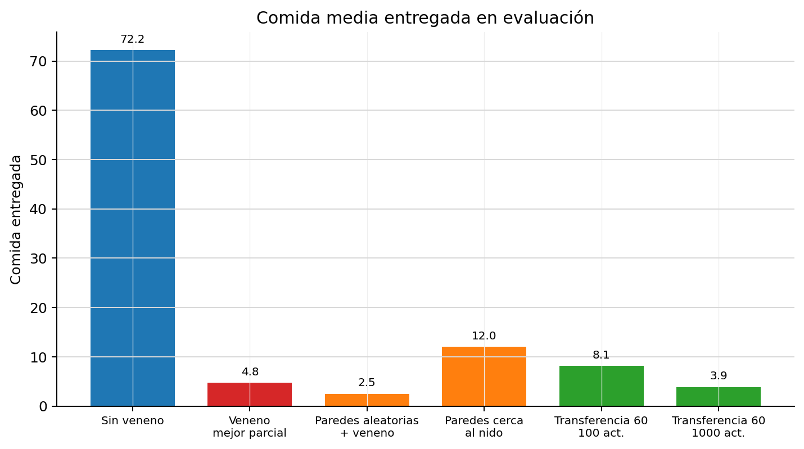

Cerrar ciclos fuente-hub
Cada hormiga debe encontrar comida, cargar un bocado, volver al
hub y repetir hasta agotar las fuentes. El reward base es
+1 por entrega; tocar comida una vez no alcanza.
Cool Antz estudia cómo aparece el forrajeo cooperativo en una colonia de políticas locales. Cada hormiga ve solo una pequeña ventana de la grilla, decide cómo moverse y puede escribir un valor discreto en la celda que visita. El objetivo no es tocar comida una vez: la comida se debe encontrar, levantar, llevar al hormiguero y agotar mediante viajes repetidos.
La pregunta central fue práctica y causal: qué cambios hacen que la entrega sea confiable, cuáles solo producen actividad aparente, y en qué punto la grilla de bytes empieza a parecer memoria externa útil para la colonia.
En despliegue cada hormiga actúa con observaciones locales: comida cercana, otras hormigas, bytes, borde, hormiguero, estado de carga, orientación e identidad.
MAPPO entrena con información centralizada. Por eso la arquitectura del crítico no es un detalle: cambia el problema de asignación de crédito.
Como las hormigas no mueren, usamos supervivencia como tasa de éxito o completitud de la tarea, no como supervivencia biológica.
La tarea visible es buscar comida, pero el experimento apunta a otra cosa: ver si agentes locales, sin memoria recurrente y sin coordenadas globales, pueden construir una memoria compartida sobre el entorno. Para volver al hub, repetir entregas y coordinarse, las hormigas tienen que aprender a usar el mapa como soporte externo: escribir marcas, leer rastros y aprovechar señales dejadas por otros agentes.
Si la política recibiera la posición del hub o pudiera guardar memoria interna con una arquitectura recurrente, el problema sería otro. Acá la restricción fue deliberada: durante entrenamiento el crítico podía usar información global para asignar crédito, pero la política evaluada era local y feed-forward.
Cada hormiga debe encontrar comida, cargar un bocado, volver al
hub y repetir hasta agotar las fuentes. El reward base es
+1 por entrega; tocar comida una vez no alcanza.
No usamos políticas con LSTM, GRU ni hidden state persistente. La política evaluada es feed-forward: decide desde lo que ve en el instante actual.
Para N hormigas, el env usa:
MultiDiscrete([5, 2 ** write_bits] * N)
Cada agente elige un par (move, write_value).
move: stay, up, right, down, left.write_value: entero entre 0 y 2 ** write_bits - 1.
Todas las hormigas comparten actor. Cada una recibe una
observación local orientada por su facing; en la línea final
usamos radio 2.
food: conteo local normalizado por comida por fuente.ants_count: ocupación local normalizada por cantidad de hormigas.bytes: bitmasks locales, una capa por bit escribible.hub: máscara local si el hub entra en visión.border/obstacles: máscara de borde y obstáculos.agent_identity: one-hot de identidad para romper simetría y permitir especialización.
Cada celda puede guardar un valor discreto definido por
write_bits. Esa capa escrita era la memoria que
queríamos que emergiera: rastros de retorno, marcas de
exploración o señales útiles para otras hormigas.
La escritura sólo se aplica sobre tiles escribibles: no sobre el hub ni sobre una celda que todavía tiene comida.
El estado base del entorno conserva
ants_pos, ants_carrying,
ants_facing, ants_count,
food, bytes,
obstacles y hub_pos.
Esa vista existe para simular y entrenar; no es lo que recibe crudo la política evaluada.
MAPPO usa un crítico centralizado para asignar crédito durante entrenamiento. Recibe posiciones de hormigas, carrying, facing, mapas globales de ocupación, comida, bytes, posición del hub, tamaño activo del grid y features auxiliares globales.
En evaluación no actúa ese estado global: sólo corre el actor local compartido.
Entrenamos con hub y comida randomizados para que la solución no sea recordar coordenadas. La política tiene que aprender un procedimiento: explorar, marcar, volver y reutilizar señales.
El mismo env podía escalarse variando tamaño de mapa, cantidad de hormigas, comida total, número de fuentes, distancia fuente-hub en layouts fijos, radio de visión, cantidad de bits, máximo de pasos y obstáculos.
La página va a contar una sola línea: qué falló, qué cambió y por qué el cuello de botella terminó estando en la representación del crítico.
La baseline directa confirmó que el problema no era dibujar el entorno: era lograr que MAPPO descubriera el ciclo fuente-hormiguero.
Entrenamos el ambiente final directamente, sin currículo:
50x50, 10 hormigas,
48 comidas, 12 fuentes,
5 bits y radio local 1. Después de
10000 updates y 12.8M pasos, la
evaluación shuffled seguía en cero.
Probamos dar señales intermedias sin cambiar el objetivo: cerrar entregas al hormiguero.
Con pickup_bonus=0.1 y 2.0M
steps, la evaluación muestreada llegó a
8.125/48, pero la determinista quedó en
0.0/48; success fue 0.0
en ambos casos.
Aparece actividad y alguna entrega sampleada, pero no una política robusta.
La lectura fue clara: no había que entrenar más tiempo de la misma manera, había que cambiar la forma de presentar y entrenar el problema.
Después de la baseline, el primer avance fue formular el escalado como curriculum learning: entrenar en arenas chicas, conservar la política y aumentar gradualmente el mapa. La hipótesis era que una estrategia local de búsqueda y retorno podía sobrevivir al crecimiento del tablero.
La limitación apareció rápido: una política útil en mapas chicos no se trasladaba bien, por sí sola, a mapas grandes. El mismo comportamiento que cerraba ciclos cortos empezaba a perder sentido cuando las fuentes quedaban lejos y la recompensa de entrega se volvía escasa.
Ese enfoque también exponía un límite de representación. En
ese momento el actor miraba apenas un cuadrado local de
3x3 y tenía un solo bit de escritura. Si miramos
solamente el canal escrito de esas nueve celdas, había
2^9 patrones locales posibles; la observación
completa incluía más señales, como comida, hormigas, borde,
orientación y si la hormiga cargaba comida, pero el protocolo
externo seguía siendo muy angosto.
La idea funcionó hasta cierto punto. Los rollouts ya no eran puro movimiento sin dirección: aparecían ciclos de comida, retorno y nueva búsqueda. Pero al agrandar el mapa, el costo de descubrir fuentes y sostener cobertura empezó a dominar. En mapas chicos, rebotar contra paredes todavía daba pistas útiles; en mapas grandes, las paredes quedaban lejos y la señal de reward por entrega se volvía mucho más escasa. Además, era conceptualmente incómodo depender tanto de los bordes: en un entorno natural, las hormigas no deberían necesitar paredes artificiales para organizar el retorno.
En una corrida del curriculum 8x8 -> 50x50
repetimos el entrenamiento sin
shaping durante el probe: el reward de entrenamiento es
reward de entorno, es decir, entrega de comida al
hormiguero. El warm-start venía de un checkpoint anterior,
así que no es una genealogía pura desde cero; aun así, la
parte que usamos para medir escalado ya no agrega bonuses de
pickup, visita, distancia ni bytes.
La matriz retrospectiva, evaluada de forma greedy para
medir retención, deja al checkpoint final con 31% de su
mejor valor en 8x8 y 67% en
16x16, pero cae a 14% en
25x25 y a 0% en 35x35. En
50x50 queda una señal no nula
(0.52 comidas cada 1000 pasos-hormiga), pero el
valor absoluto es demasiado bajo para leerlo como una
solución. Para los rollouts visuales usamos escritura greedy
y movimiento sampleado con temperatura 0.525.
La lectura no fue descartar curriculum learning, sino hacerlo más exigente: no alcanzaba con subir el tamaño del mapa por calendario. Hacían falta gates de validación por tamaño, métricas normalizadas por pasos-hormiga y una representación que no obligara a resolver comunicación global con un canal local tan estrecho.
Si el mapa crecía antes de validar maestría, la política podía arrastrar hábitos frágiles hacia etapas más difíciles. El resultado era actividad visible, pero no necesariamente un protocolo de regreso estable. La falla no era “mapa grande” en abstracto: el experimento mezclaba dos problemas que después tuvimos que separar, cobertura multi-agente y descubrimiento de fuentes escasas.

La transición visual es más informativa que un único score. Hasta
25x25, todavía aparecen búsqueda local, pickups y
entregas en ventanas cortas. A partir de 30x30, la
misma observación local produce exploración y escritura visible,
pero cada vez menos retorno estable: las paredes aparecen menos,
las fuentes tardan más en entrar al campo local y los rastros
dejan de funcionar como protocolo global. Los videos son
rollouts sampleados de cada checkpoint, no la matriz greedy de
retención; sirven para ver el cambio de comportamiento, no para
leer conteos de delivery exactos.
El problema no era solo agrandar el mapa: también había que evitar que las primeras etapas se resolvieran por saturación de hormigas.
Si dejábamos demasiados agentes en arenas chicas, el comportamiento podía parecer útil sin haber aprendido una estrategia transferible. Por eso probamos una progresión más balanceada: subir mapa y colonia al mismo tiempo.
El setup recorría una escalera de dificultad:
4x4 / 1, 6x6 / 1,
8x8 / 2, 10x10 / 2,
12x12 / 3, 16x16 / 4,
20x20 / 5, 25x25 / 6,
32x32 / 8, 40x40 / 10 y
50x50 / 10. Cada etapa intentaba mantener el
desafío vivo: ni mapa demasiado grande sin cobertura, ni mapa
chico resuelto por densidad.
El fallo apareció en el criterio de avance. Llegar a
16x16 con 4 hormigas no significaba
que la política hubiera aprendido ese mapa. El rollout muestra
actividad y contacto con la tarea, pero no ciclos
fuente-hormiguero confiables.
La hipótesis estaba mejor planteada, pero el salto seguía ocurriendo antes de validar maestría.
La progresión hacía más honesta la dificultad, pero todavía dependía del calendario del experimento. Necesitábamos una señal clara de que una etapa estaba dominada antes de pasar a la siguiente.
De ahí sale el siguiente bloque: validation gates.
Las gates resolvieron una parte del problema: ya no avanzábamos de etapa sólo porque el calendario lo decía.
Después del currículo de mapa y colonia, cambiamos el criterio de promoción. Una etapa sólo podía pasar si demostraba dominio en evaluaciones determinísticas y muestreadas: entrega casi completa, éxito suficiente, pickup-to-delivery alto y episodios dentro de una ventana razonable de pasos.
delivered_fraction >= 0.95success_rate >= 0.75pickup_to_delivery >= 0.900.65 del máximo de pasos
El cambio funcionó como freno. La cadena pasó
10x10 / 2, 12x12 / 3,
16x16 / 4 y 20x20 / 5, pero dejó de
escalar automáticamente cuando 25x25 / 6 no pudo
sostener todas las condiciones. Ahí el mejor gate score quedó
en 0.875, cerca de pasar, pero sin cumplir todos
los criterios a la vez.
En 16x16 / 4 ants, el attempt
099 alcanzó gate score 1.0.
La evaluación determinística entregó 13.875/14 con success 0.875; la muestreada entregó 13.688/14 con success 0.875.
El número era excelente, pero el rollout mostró el límite: pasar métricas de entrega no garantizaba una estrategia transferible.
La lectura fue más fina que “falló”. Las gates corrigieron el salto prematuro, pero también dejaron expuesto que necesitábamos validar la semántica de la política, no sólo contar entregas.
El planteamiento fue usar el radio de visión como currículo: empezar con una política que observa casi todo el tablero y, recién después, exigirle operar con una observación local.
La hipótesis inicial era que una hormiga con visión global tenía una tarea más fácil: si podía ver dónde estaban las galletas, no tenía que descubrir fuentes a ciegas. Entonces el plan era aprender primero en ese caso aparentemente benigno y usar esa política como punto de partida para radios cada vez más chicos.
En este experimento, radio 25 significaba que
cada decisión del actor recibía una observación
51x51: 2601 celdas con canales de
comida, hormigas, bits escritos, hub y borde/obstáculos, más
señales propias como si la hormiga carga comida y hacia dónde
mira. En la versión densa, esa grilla se aplana y entra a un
MLP que termina en dos heads de acción: movimiento y
escritura. El crítico, usado durante entrenamiento, mira una
observación centralizada para estimar valor, pero la acción
ejecutada sale del actor local de cada hormiga.
Ahí aparece el problema: una ventana 51x51 no es
una pista pequeña, es un espacio visual enorme. La red tiene
que aprender qué posiciones importan dentro de miles de
entradas posibles. Además, las hormigas no tienen memoria
recurrente interna: en cada paso la política decide desde la
observación actual y lo que haya quedado escrito en la grilla.
Por eso el actor tiene que aprender una regla reactiva que,
aplicada paso a paso, cierre el ciclo comida-hub: acercarse,
hacer pickup, volver y repetir. Ver más no resuelve
automáticamente esa asignación de crédito.
Luego, si el radio de visión grande convergía, la idea era
achicar la ventana haciendo warm-start. En la versión con
primera capa densa, esa capa recibe una lista larga de valores:
primero las celdas de comida, después las de hormigas, después
los bits, y así. Si pasamos de 51x51 a
41x41, la nueva observación corresponde al
sub-tensor central de la observación anterior. Conservamos las
conexiones que miraban esas coordenadas centrales, porque
siguen existiendo en el nuevo radio, y descartamos las
conexiones asociadas al anillo exterior. No se reinventa toda
la red: las capas internas, los heads de acción y el crítico
quedan como estaban; sólo cambia la entrada compatible con el
nuevo tamaño.
Como respuesta a esa dificultad, también se probó un enfoque convolucional con el objetivo de ayudar a la convergencia. La motivación era que filtros compartidos explotaran la estructura espacial de la grilla antes de pasar al MLP, en lugar de obligar a la red a tratar cada celda como una variable independiente. Pero incluso con ese cambio, y con un entorno deliberadamente denso en galletas para darle muchas oportunidades de pickup, la política no logró una conducta greedy de pickup estable ni convergió de forma confiable.

La etapa de visión completa no produjo una base estable para transferir. Ver el mapa entero no alcanzó para aprender una política robusta de forrajeo.
La curva resume el problema mejor que un único mejor punto: aparece algún pico de reward, pero no se transforma en una meseta ni en una tendencia sostenida. Para leer el comportamiento de pickup hay que apoyarse en el rollout visual: la métrica dura del gráfico es entrega al hub.
La lectura es que la visión global introdujo demasiados grados de libertad. La política tenía que resolver a la vez selección espacial, navegación, pickup y retorno. Cuando la señal positiva aparece sólo en picos, el checkpoint siguiente no hereda una habilidad sólida sino una política frágil.
En retrospectiva, el experimento enseñó que “más información” no era lo mismo que “problema más fácil”. Con radio gigante, la red tenía que aprender a seleccionar señales relevantes dentro de una entrada enorme antes de poder aprender el comportamiento de forrajeo. Como esa base era frágil, el warm-start por recorte central no alcanzaba: al reducir el radio se preservaba estructura, pero no una estrategia ya dominada.
Frase central pendiente.
Slot para explicar por qué premiar volver cargando cambia el aprendizaje.
Frase central pendiente.
Slot para contar por qué automatizar dificultad no resolvió el criterio de éxito.
Frase central pendiente.
Slot para presentar laberintos como intento de mejorar exploración, no como benchmark comparable.
Frase central pendiente.
Slot para mostrar que el cuello deja de ser volver y pasa a ser encontrar fuentes sparse.
Frase central pendiente.
Slot para cerrar con el cambio de representación espacial y la primera política válida.
Slot de conclusión: después de baseline, currículos, reinicios y falsos positivos, encontramos el cuello de botella y conseguimos una primera política válida. Desde ahí empieza otra historia.
Capítulo para contar qué pasa después de obtener una política válida: escalar tamaño de mapa, cantidad de hormigas, cobertura, congestión y comunicación en colonias mucho más grandes.
Acá van rollouts y métricas de escalado: mapas grandes, más agentes, eficiencia por pasos-hormiga y límites de coordinación.
Esta rama agrega una dificultad distinta al forrajeo clásico: algunas galletas se ven exactamente igual que las normales, pero matan a la hormiga que intenta tomarlas. La idea era ver si la colonia podía aprender una regla social simple: una galleta junto a hormigas muertas no debería tratarse igual que una galleta sin cadáveres alrededor.
La galleta letal no está marcada en la observación: para la política se ve como comida común hasta que una hormiga muere.
En el estado interno del entorno, la comida segura y la comida letal se guardan en grillas separadas. En la observación, en cambio, ambas se proyectan al mismo canal de comida visible. Esa decisión es central: el actor no recibe un canal que diga "esto es veneno".
Lo nuevo es la señal social. Cuando hay comida letal, el
entorno agrega dead_ants_count. Si ese canal está
presente, el actor lo incorpora como otro parche local
orientado; el crítico lo recibe como mapa global durante
entrenamiento.
No cambia la forma de actuar de las hormigas.
El actor sigue produciendo dos decisiones por hormiga: movimiento y escritura. El entorno sigue premiando entregas en el nido y mantiene la memoria escrita en el mapa. La diferencia es que ahora una acción de pickup sobre comida letal mata a la hormiga, deja su cuerpo como señal local y agrega una penalización por muerte.
El mapa abierto no se resolvió de forma robusta, pero sí dejó una señal visual útil.
En este primer escenario, la política debía seguir forrajeando mientras aprendía a no tomar la fuente peligrosa. El setting era un mapa abierto de 50x50, con muchas galletas distribuidas en el mapa y fuentes seguras y letales muestreadas en posiciones aleatorias. La fracción entregada mide qué proporción de las galletas seguras disponibles terminó efectivamente en el nido.
La corrida larga de 160 mil updates terminó cerca de reward 0. La interpretación más clara es que la política encontró una respuesta conservadora: no agarrar galletas para no arriesgar una muerte. Eso evita la penalización letal, pero también abandona el objetivo de forrajear.
Para corregir ese colapso se subió el pickup_bonus:
un término de reward de shaping que se suma cuando una hormiga
levanta una galleta. Sí es reward, pero no es la reward
principal de entrega al nido; sólo incentiva que la política
vuelva a intentar pickups. Con ese empuje, el mejor checkpoint
de 80 mil updates vuelve a tomar riesgo, recupera entregas y
mejora la fracción entregada. Aun así, la curva sigue siendo
inestable: no es una convergencia limpia, sino una política
parcialmente útil.
El rollout de evaluación donde mejor se ve esa corrida de 80 mil updates es el anillo controlado: muchas galletas seguras alrededor del nido y una fuente letal cercana. Ahí se ve que, aunque el entrenamiento sea irregular, la política sí aprende a ignorar la galleta letal asociada a cadáveres mientras sigue explotando comida segura.


pickup_bonus, la de 80
mil updates vuelve a explorar pickups, aunque todavía con
mucha variación.
El problema apareció al evaluar la política de mapa abierto en laberintos fijos.
En esos rollouts de test apareció una falla doble. Por un lado, la política no seguía trayectorias consistentes cuando la observación quedaba cortada por paredes. Por otro, cuando la cookie letal aparecía cerca de pasillos o cuartos laterales, la asociación entre cadáveres cercanos y fuente peligrosa dejaba de ser confiable.
Una hipótesis razonable es que el entrenamiento abierto había visto cookies letales en una geometría demasiado específica: fuentes letales cerca del hormiguero y normalmente lejos de paredes. El agente podía aprender una regla local útil para ese caso, pero no para una cookie letal mezclada con obstáculos. En el mismo rollout de laberinto, incluso cuando una hormiga no moría al encontrar la fuente letal, tampoco lograba salir del cuarto y continuar el recorrido de forma estable.
La solución fue incluir paredes en la distribución de entrenamiento.
Random walls usó segmentos de pared aleatorios, comida segura y comida letal en el mismo mapa. La dificultad ya no era sólo "no tomar cookies letales"; también había que rodear obstáculos, mantener rutas útiles y seguir entregando comida.
En evaluación, random walls volvió a mostrar una señal positiva: la colonia podía dejar sin tomar la cookie letal. Como subresultado, en una escena con una única fuente letal cerca de comida segura se ve que el cadáver puede inducir una zona local de exclusión, incluso cuando la hormiga muerta no está exactamente en el mismo tile que la galleta.
El límite fue la navegación. Todavía no se veían trayectorias satisfactorias alrededor de paredes: con varias galletas cerca del hormiguero, la política podía conseguir reward sin aprender recorridos largos condicionados por obstáculos. Ese diagnóstico motivó el siguiente experimento.
Near-nest walls fue el tercer paso: un setting más controlado para forzar navegación con paredes sin quitar cookies letales.
Esta variante redujo la cantidad de comida segura y la ubicó lejos del hormiguero, de modo que entregar comida exigiera recorrer trayectorias más largas y esquivar paredes. La fuente letal se mantuvo en el entorno para que la política no olvidara el problema original: algunas cookies visualmente normales matan al agente si las toma.
En los rollouts de evaluación mostrados, la cookie letal no se dejó pegada al hormiguero: se la colocó más lejos para verificar que la política no estuviera aprendiendo solamente una regla de cercanía al nido. La pregunta era si la colonia podía usar cadáveres y paredes como señales locales, no sólo evitar una zona fija.
El resultado principal es que las hormigas empiezan a esquivar paredes de forma activa: sus trayectorias cambian con los obstáculos y aun así mantienen la fuente letal sin explotar. Por eso el resultado es más fuerte que random walls, aunque sigue siendo acotado a una distribución guiada.


La idea era combinar navegación ya convergida con el aprendizaje de paredes y cookies letales.
El experimento de transferencia retomó la idea de near-nest walls, pero arrancando desde un checkpoint ya convergido en el mapa abierto sin lethal cookies. Ese checkpoint entregaba el 100% de las galletas y tenía una conducta reconocible: recorría el mapa con una especie de barrido horario.
La hipótesis era que esa navegación previa iba a sobrevivir al fine-tuning con paredes y cookies letales. En las curvas la continuación podía parecer prometedora, pero al mirar la política aparecía un modo de falla claro: muchas hormigas terminaban yendo hacia la izquierda y evitando agarrar galletas antes que arriesgarse a tomar una letal. En otras palabras, el fine-tuning empeoró la navegación: la política sacrificó cobertura del mapa y pickups para reducir la probabilidad de tocar una cookie letal.
La comparación corta contra larga resume el problema. Con 100 updates, la transferencia todavía conserva parte del comportamiento útil: 8.125 entregas y 67.7% de la tarea. Con 1000 updates, cae a 3.875 entregas, 32.3% y retorno de evaluación negativo. La métrica agregada no alcanza para describir la pérdida de navegación.
El laberinto muestra una mejora y una pérdida al mismo tiempo.
En la prueba en L, las hormigas logran entrar a un cuarto con una galleta letal y la ignoran satisfactoriamente. Pero también se ve el costo: navegan peor, pierden la capacidad de salir del cuarto de forma consistente y no continúan el laberinto para completar la tarea.
La penalización por muerte debería entrar como curriculum, no como castigo rígido desde el comienzo.
Una línea natural es hacer scheduling de
death_penalty: empezar con una penalidad que
permita explorar y aprender qué fuentes son útiles, y
endurecerla gradualmente cuando la política ya conserva
navegación. También conviene seleccionar checkpoints con
métricas de cobertura o diversidad de trayectorias, no sólo
con retorno agregado.

Capítulo para reconstruir la historia del entorno adversarial: dos colonias compitiendo por comida, pérdida de la política previa al empezar a entrenar, anclaje con KL para no olvidar y el primer resultado estable con un equipo freeze y otro en training.
El ambiente adversarial no cambia la mecánica central de AntByte: cambia quién puede usar y modificar la memoria escrita en el mundo.
Partimos del mismo AntByte: hormigas locales, comida dispersa, escritura sobre el mapa y políticas sin memoria recurrente. La diferencia es que ahora hay dos colonias sobre el mismo tablero: dos hubs, comida compartida y un único grid de bytes que ambos equipos pueden leer y sobrescribir.
N hormigas pasan a ser 2N.Antes buscábamos que una colonia aprendiera a usar el mundo como memoria propia.
En el ambiente adversarial, la pregunta es si esa misma memoria compartida también puede usarse para manipular el mapa, empeorar el retorno del rival y disputar el control de las señales escritas.
El espacio de acciones no cambió respecto del ambiente
principal: cada hormiga sigue eligiendo
(move, write_value). Lo que cambia es la
cantidad de agentes: si cada equipo tiene N
hormigas, el env adversarial compone acciones para
2N hormigas.
MultiDiscrete([5, 2 ** write_bits] * 2N)
Movimiento, escritura al mover y restricciones de escritura mantienen la misma semántica del entorno base.
entregas_rojo - entregas_azulentregas_azul - entregas_rojo
Cada entrega propia suma +1; cada entrega rival
resta -1. El objetivo deja de ser sólo
recolectar comida: pasa a ser maximizar la diferencia entre
colonias.
El actor conserva la estructura local del ambiente principal. No recibe posición global del hub rival ni visión global de hormigas enemigas. El cambio es de perspectiva: lo que antes era ocupación y hub ahora se interpreta como propio o rival.
ants: hormigas propias positivas; hormigas rivales negativas.hub: hub propio positivo; hub rival negativo si entra en visión.La experimentación adversarial no arrancó con self-play completo: entrenamos un equipo contra un rival congelado.
Si dos políticas cambiaban al mismo tiempo, cualquier fallo podía venir del reward, del entorno, de la transferencia o de la propia inestabilidad de self-play. Por eso fijamos un oponente y dejamos que el learner se adaptara contra una dinámica estable.
Ambos equipos arrancaron desde el mejor actor cooperativo del primer capítulo. No queríamos que el adversarial volviera a aprender desde cero cómo buscar comida; queríamos medir si una política que ya sabía forrajear podía aprender una señal nueva sobre un medio compartido.
Se transfirió el actor, pero no el crítico.
El crítico cooperativo estimaba valor de entrega; el nuevo
objetivo era ventaja relativa:
own deliveries - opponent deliveries. Por
eso el crítico adversarial arrancó de cero y usamos una
arquitectura MLP para esta rama experimental.
Durante entrenamiento seguimos randomizando hubs y comida para evitar que la política memorizara layouts. Además armamos escenarios fijos de diagnóstico, casi como un modo juego, para mirar comportamiento con menos ruido.
Esos mapas fijos no eran prueba de robustez general: servían para ver si aparecía una interacción adversarial legible.
own_deliveries y opponent_deliveries.delivery_difference: ventaja directa del learner.win_rate: episodios con diferencia positiva.side-swapped gap para detectar sesgos de lado/orden.Antes de entrenar, enfrentamos dos copias congeladas del mismo actor para validar que el entorno no estuviera obviamente sesgado.
La lectura fue suficiente para seguir: el frozen opponent no era random y el setup no hacía ganar siempre al mismo lado.
Frase central pendiente.
Mostrar los primeros rollouts: el entorno funciona, pero el learner pierde conducta útil antes de aprender una estrategia adversarial estable.
Frase central pendiente.
Separar las mejoras: curriculum de comida y layout, checkpointing por evaluación, side swaps y behavior anchor para sostener la política base.
Frase central pendiente.
Presentar métricas y videos del mejor checkpoint, distinguiendo evaluación randomizada, escena fixed-center y lectura de sensibilidad al layout.
Frase central pendiente.
Cerrar con ablations de escritura, pool de oponentes, métricas alrededor del hub rival y el paso pendiente hacia self-play.
Capítulo para separar otra línea de investigación: roles que cambian en el tiempo, especialización transitoria y coordinación cuando no todos los agentes deberían hacer lo mismo en cada fase.
Acá irán los entornos de roles temporales, resultados prematuros y preguntas abiertas.
{kind=link}
{kind=link}
{kind=link}